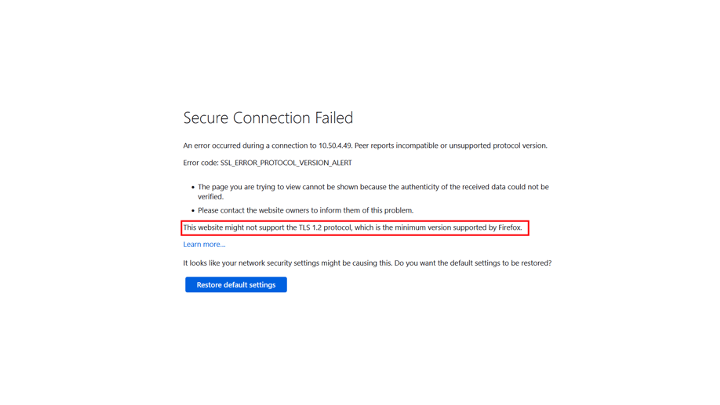
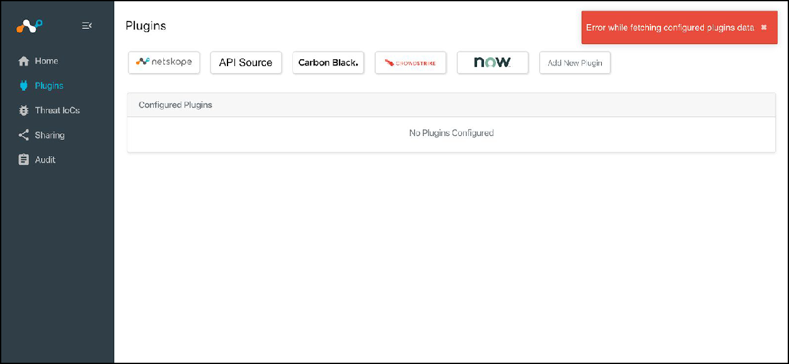
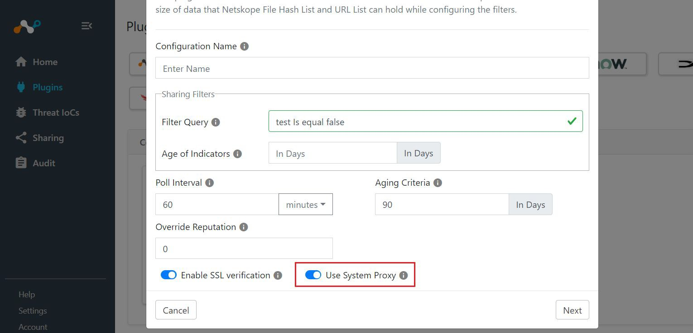
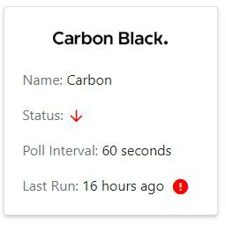
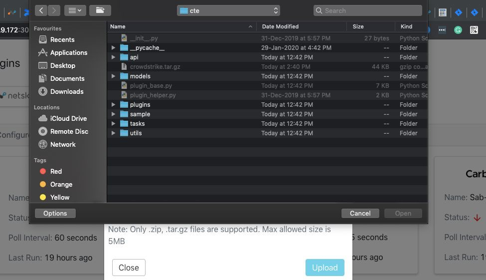
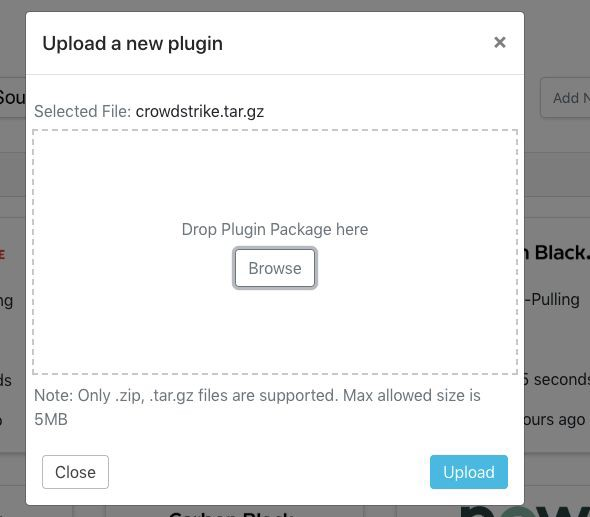
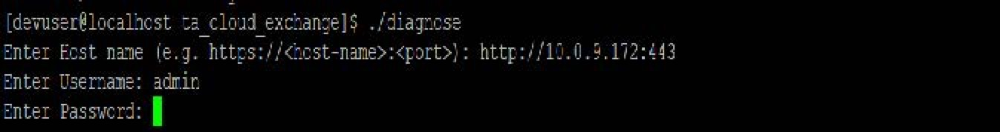

Cloud Exchange Troubleshooting
Review these sections for troubeshooting information.
This section provides information about common issues and suggested solutions.
Yes, please open a ticket with Netskope support and we’ll get an engineer to help you as soon as possible. Usually following the installation steps in this guide prevents most issues. If you do engage support, and you can access Cloud Exchange (the install got that far), please provide the following details with the ticket:
Download, install (requires ZIP command), and execute the Diagnose script found at https://github.com/netskopeoss/ta_cloud_exchange
If you have already installed a SSL certificate, two of the commands in the diagnose script will not work. If the UI is accessible:
Copy the exact version of cloud exchange and its components in use by CE. Go in your CE instance as follows: Go to Settings > General tab, Software version section.
Download the application's logs from your CE platform. Navigate to the Logging tab and click on the download icon.
Attach all output to the support ticket.
For issues when checking for installed podman-compose version, you can reinstall podman-compose by running this command: sudo pip3 install podman-compose.
There are 3 possible causes:
Mongo data directory permission issue
The Core/Mongo-DB container is down
The CE maintenance password is incorrect
Verify
Execute ls -lRn . inside the directory with docker-compose.yml.
The mongo-data dir should be read/write accessible to the user with UID 1001.
./data/mongo-data: total 0 drwxr-xr-x. 3 1001 0 16 Apr 14 18:16 data
Solution to mongo data directory permissions issue:
Execute the setup script again using ./setup to fix the file permissions.
Restart CE.
Verify
Check the container status using sudo docker-compose ps, all the containers should be Up.
$ sudo docker-compose ps Name Command State Ports ---------------------------------------------------------------------------------------------------------------- ce_330_core_1 /bin/sh start.sh Up 80/tcp ce_330_mongodb-primary_1 /opt/bitnami/scripts/mongo ... Up 0.0.0.0:27018->27017/tcp ce_330_rabbitmq-stats_1 /opt/bitnami/scripts/rabbi ... Up 15671/tcp, 0.0.0.0:15672->15672/tcp, 25672 /tcp, 4369/tcp, 5551/tcp, 5552/tcp, 5671/tcp, 0.0.0.0:5672->5672/tcp ce_330_ui_1 /bin/sh start.sh Up 0.0.0.0:443->3000/tcp, 80/tcp ce_330_watchtower_1 /watchtower --http-api-update Up 0.0.0.0:8080->8080/tcp
Solution to core/mongo-db container is down:
If any containers are down follow the below steps:
sudo docker-compose down sudo ./start
Verify
Check the core logs using `sudo docker-compose logs core` for any "authentication error".
Check if the customer is using CE version 3.2.0 or below 3.2.0 with the same MongoDB.
Solution to the maintenance password is incorrect:
Perform the following steps:
sudo docker-compose down sudo rm -rf .env sudo ./setup Add maintenance password as "cteadmin" sudo ./start
SSO requires a top level domain (TLD). Not adding a TLD in the hostname while mapping the URL and upon enabling SSO in CE, a customer will receive the error "Invalid Hostname, Top Level Domain required". This is resolved by adding proper TLD e.g. (netskope.com).
|  |
If you receive this kind of error then it's because Netskope CE by default supports TLSv1.3 only. To resolve this error, you should allow Netskope CE to run on TLSv1.2 along with TLSv1.3 and for that you have to change the TLS version from the setup script. Re-run the setup script again and give ‘Yes’ to following question.
Do you want to enable TLSv1.2 along with TLSv1.3 for CE UI.
Then execute the start script.
If your certificates are expired then follow below steps to regenerate the certificates.
Down all the containers.
Remove the certificate files (cte_cert.crt, cte_cert_key.key) from data/ssl_certs folder.
Re-run the setup script to regenerate the certs. Enter “https” to the below question:
Do you want to access CE over HTTP, or HTTPS (HTTPS is recommended)? https
Execute the start script.
While sharing the IoCs to a particular plugin, the sharing filters provided with the plugin’s configurations are considered. Ensure that the sharing configuration matches with the IoCs you are expecting to be shared. If the sharing filter is incorrect, fix the sharing criteria. To fetch the historical data that you may have missed due to misconfiguration, consider removing the sharing configuration and re-adding it.
Netskope only accepts URLs with wildcard characters that are in front of the domain, others will be rejected when Threat Exchange tries to send it. So *.google.com will be accepted by the Netskope tenant,but google.com/* will not. If your Threat Exchange database contains wildcards, you will need to manually tag to share.
By default, all your uploaded plugins are stored inside the ./data/custom_plugins directory. However, this can be changed from the docker-compose by mounting a different directory or the Admin can add an additional repository to download custom plugins from. This is configured within the Settings menu. This is the best method of adding additional plugins to your CE instance, and the only method for adding additional CTO, CLS, and CRE plugins.
To reset the administrator password, refer to Reset Password in the Account Settings section. Make sure to change the password from Account Settings after the CE administrator has reset the password.
To reset any other user’s password, the Super Admin can update a user password from Settings > Users, and then click the Edit icon on the right.
A special character was potentially used for the maintenance password during setup, which RabbitMQ does not support and causes issues with other services attempting to schedule tasks as cross-container communication fails to engage RabbitMQ.
Run the following steps from the directory where docker-compose.yml resides to reconfigure the maintenance password:
sudo docker-compose down sudo rm -rf .env sudo ./setup Add maintenance password. sudo ./start
The platform by default searches for the last 7 days of IoCs. If there are too many IoCs (more than 1 million) and no filter selected, the search performance will be slow.
Proposed solution : Consider applying the filters and narrowing the search criteria. Performance is best when the data set is ~100K records or less.
|  |
Verify you uploaded a custom plugin with active configuration to Netskope CE prior to upgrading or restarting the containers. In such a case, upload the custom plugin after the upgrade (Refer to Create a Custom CTE Plugin in the Supported 3rd-party Plugins). The configurations would be retained after uploading the custom plugin and normal operation is restored.
Verify if the outgoing API calls require a proxy. If your network deployment expects proxy for HTTP API calls and proxy is configured, the plugin operations would be impacted.
Proposed Solution:
Go to Settings > Proxy.
Edit the existing configuration and enable Use System Proxy.
|  |
CE relies on an internal scheduling mechanism for the plugin's task. There are workers which execute the plugin tasks, by picking up a task from the queue one by one. The number of workers available in your system depends on the number of cores. If the available workers are busy serving plugin task, the already queued up task has to wait till the existing worker is available. This situation may usually occur during initial data ingestion, where there’s more data to be processed.
Proposed Solution: Consider increasing the cores of the system if you have a large number of configured plugins, and the configured plugins are consistently lagging behind. For initial ingestion, the system should pick up the backlog post initial ingestion and behave normally if the incremental data is not large.
|  |
If there is a red alert icon on one of the configurations, it indicates that there was one or more problems while polling the plugged-in system for data per that configuration. This could be related to API, proxy, or SSL settings.
Proposed Solution:
Make sure the Plugin Configuration has correct parameters for API, Secret key, URL, etc.
Make sure Enable Proxy is selected and your proxy is configured if outbound network calls require a proxy connection.
Check logs for errors occurring around the last run time displayed on the configuration from the Audit section.
|  |
When a user tries to upload a plugin with tar.gz package with the browse button, tar.gz files are not selectable by default.
Proposed Solution:
Drag and drop plugin packages to the drop area of the UI.

Open the plugin configuration and set the Last Run value to an older date-time and save the configuration. Make sure that the configuration is currently not running when you update the Last Run value.
For STIX 1, the cybox observables of type URI, Domain, SHA256 and MD5 are extracted. For STIX 2, the same type of observables are extracted from the pattern string field of the indicators.
This is a known limitation. Indicator comment is only added the first time that file is encountered. In subsequent runs, if the file is renamed, only the external hits will be increased as long (as the contents of the file remains same).
This may happen if the API credentials used to create the tickets do not have access to the tickets anymore. Make sure that the credentials you are using have read access to the tickets.
When a Git repo contains a large number of files, a plugin configuration could timeout. The default timeout duration is set to 120 minutes. However, this can be increased by adding an environment variable in the docker-compose file.
core:
image: crestsystems/netskope:core-latest
container_name: "core"
volumes:
- ./data/custom_plugins:/opt/netskope/integrations/cte/custom_plugins:z
environment:
- PLUGIN_TIMEOUT_MINUTES=120Log Shipper stops if something breaks, typically because one of the following conditions are considered a failure: code race condition, core dump, process errors, or TCP socket errors. If CE receives 5 of these, it stops. Note that Log Shipper does NOT restart when it receives API errors, including the HTTP 200 error code, Response: {"status":"error","errorCode":"General Error","errors":["We encountereda backend error. Please try again."]}
When updating the plugin from Settings > Plugin Repository, the plugin code is getting updated but it is not reloaded, which is causing this error. Try to restart the docker services using the command docker-compose restart to resolve the issue.
When you see this message: Error URL host invalid, Top Level Domain required, it's typically because the domain name used for accessing CE does not have TLD. To resolve this, use a hostname with TLD.
Containers not starting after rebooting the server/VM is due to the restart: on-failure:5 tag in the docker-compose.yml file. To resolve this, change tag value as restart: always” in the docker-compose.yml file.
A Bad Gateway error appears due to mongo-data folder permissions not being properly set. Copying the wrong MongoDB folder can cause a permission issue to occur. To resolve this, delete the mongo-data folder, recreate the folder, and copy data from the backup location.
One of the possible reason for getting Bad gateway is the mongo-data directory is removed or the mongo-data directory does not have enough permissions. To resolve the issue:
Pull the latest changes from remote:
git reset –hard HEAD && git pull.Rerun the setup script:
python3 setup.
Bad gateway error appears due to the maintenance password not being setup, which is available in latest version, but not in old docker compose version. To resolve this, do a git pull, and then run the setup script with maintenance password and restart CE.
If you are having any issue while checking for installed a podman-compose version, you can reinstall podman-compose by running below command: sudo pip3 install podman-compose.
CE is designed to leverage dynamically defined DNS due to limitations of docker-compose. If you wish to have CE utilize rotating DNS services, the resolv.conf file must be customized to eliminate references to corporate DNS servers and restored after every code upgrade
To apply a workaround customers need to follow below steps:
Copy the host's /etc/resolv.conf file and create a new file (copy of /etc/resolv.conf) inside the data folder of ta_cloud_exchange.
Open the copied resolv.conf file and remove the corporate nameservers (which are not required or desired) and add the static nameserver 10.89.0.1 that will be appended to the container.
Mount the newly created resolv.conf file to the core container. Open the podman-compose.yml file and add this line inside the volumes section of the core service: ./data/resolv.conf:/etc/resolv.conf
Down all the pods using the ./stop command and then again start the pods using ./start command.
Note that you will need to maintain this resolv.conf file after every upgrade as the setup script will overwrite your changes.
Follow the steps below to upgrade and maintain your file:
Use this command to forcefully reset all files on Git to HEAD: git reset --hard HEAD
Upgrade the CE using traditional update instructions from the documentation.
The resolv.conf file from the previous CE must be moved to the newly cloned repo if the customer is cloning the new repository. If not, there is no need to create or transfer the file because it has already been created.
As described in the instructions for the workaround, now open the docker-compose.yml or podman-compose.yml file and mount the data directory's resolv.conf file.
Down all the containers and then again start the containers to reflect the changes.
These sections provide descriptions for the Cloud Exchange Platform and the Log Shipper, Ticket Orchestrator, Threat Exchange, and Risk Exchange modules.
Error Code | Error message |
|---|---|
CE_1000 | Invalid request query parameter is provided: The query parameter needs to be only from "sso", "slo", "sls", and "acs". Any other request query parameter provided will throw this error. |
CE_1001 | Error occurred while processing the query: Any kind of error that has not been handled will be handled here. An example might be the Overflow Error when the integer value is too long. |
CE_1002 | Could not load the uploaded plugin: Will handle all HTTP Exceptions only. |
CE_1003 | Error occurred while checking for updates: Occurs when the docker credentials are wrong. Can also occur when there are Docker errors. |
CE_1004 | Error occurred while connecting to mongodb: Occurs during either 1) MongoDB container is down or 2) The MongoDB credentials are wrong. |
CE_1005 | Error occurred while checking for system updates: Occurs when there is an issue with credentials or there is a Docker error like DockerException(""Error while fetching server API version: ('Connection aborted.', PermissionError(13, 'Permission denied'))"")". |
CE_1006 | Error occurred while checking for plugin updates: Occurs if there is a connection error to the repository or if there are not enough permissions. |
CE_1007 | Error occurred while cleaning up system logs: Occurs if Mongodb container might be down or if there is a connection error. |
CE_1008 | Error occurred while cleaning up tasks: Occurs if Mongodb container might be down or if there is a connection error. |
CE_1009 | Tenant with name <tenant_name> no longer exists: Occurs when the tenant has been deleted. |
CE_1010 | Error occurred while pulling alerts: Exceptions related to V2 API of Netskope like Max Retry Error or Connection, Proxy Error. |
CE_1011 | Error occurred while pulling events: Exceptions related to V2 API of Netskope like Max Retry Error or Connection, Proxy Error. |
CE_1012 | Error while loading plugin. Could not parse manifest: Occurs when the manifest.json provided is invalid. |
CE_1013 | Error occurred while importing plugin: Occurs when there are import, syntax, and library errors. |
CE_1014 | Error occurred while cloning plugin repo: Occurs when CE is not able to clone git repo due to connectivity or wrong credentials or incorrect repo. |
CE_1015 | Error occurred while importing mapping file: Occurs if there is a wrong key provided in mapping file or there is an invalid JSON file. |
CE_1016 | Error occurred while fetching updates for plugin repo: Occurs when CE is not able to connect to the remote repo because of reasons such as expired credentials or exceptions in the command git fetch. |
CE_1017 | Error occurred while parsing manifest.json for <package>: Occurs if and only if there is a JSON decode error during the parsing of manifest.json file. |
CE_1018 | Error occurred while updating origin for repo: Occurs if wrong repository credentials are provided or there are expired repo credentials or there is a connection error. |
CE_1019 | Could not find container with keywords <containers>: Occurs if CE is not able to find containers from client's container list. |
CE_1020 | Error occurred while checking for updates for container <containers>: Occurs when CE is not able to pull the changes from the docker hub for the given image tag. |
CE_1021 | Error occurred while updating the containers: Occurs when watchtower container might be down or there is an invalid token due to which watchtower cannot be connected. |
CE_1022 | Error occurred while connecting to rabbitmq server: Occurs if CE cannot connect to the rabbitmq API. |
CE_1023 | Error occurred while sharing usage analytics with Netskope: Occurs due to mongodb error, key error or connection error. |
CE_1024 | Error occurred while validating v2 token : Exceptions related to V2 API of Netskope like Max Retry Error or Connection, Proxy Error. |
CE_1025 | Error occurred while validating v1 token: Exceptions related to V1 API of Netskope like Max Retry Error or Connection, Proxy Error. |
CE_1026 | Exception occurred while checking disk free alarm: Any exception that occurs while connecting to Rabbitmq API. There might be a connection error or sometimes even rabbitmq might be down. |
CE_1027 | Could not load the uploaded plugin: Will handle all exceptions and then proceeds to throw a 500 internal server error along with information about the exception caught. |
CE_1028 | Error occurred while checking for updates: Occurs during actually updating. This happens when the docker credentials are wrong. Can also occur when there are Docker errors |
CE_1029 | Tenant with name <tenant_name> no longer exists: Occurs if a tenant is not found and CE is trying to pull alerts. Can happen if the tenant is deleted. |
CE_1030 | Tenant with name <tenant_name> no longer exists: Occurs if a tenant is not found and CE is trying to pull events. Can happen if the tenant is deleted. |
CE_1031 | Error occurred while pulling alerts: Occurs when the status code is not valid (not 200 or 201) for V2 API. There are no exceptions, only the response status code is invalid. |
CE_1032 | Error occurred while pulling alerts: Any other exception for V2 API not handled before will be handled here. |
CE_1033 | Error occurred while pulling alerts: Exceptions related to V1 API of Netskope like Max Retry Error or Connection, Proxy Error. |
CE_1034 | Error occurred while pulling alerts: Occurs when the status code is not valid (not 200 or 201) for V1 API. There are no exceptions, only the response status code is invalid. |
CE_1035 | Error occurred while pulling alerts: Any other exception for V1 API not handled before will be handled here. |
CE_1036 | Error occurred while pulling events: Occurs when the status code is not valid (not 200 or 201) for V2 API of events. There are no exceptions, only the response status code is invalid |
CE_1037 | Error occurred while pulling events: Any other exception for V2 API not handled before will be handled here. |
CE_1038 | Error occurred while pulling events: Exceptions related to V1 API of Netskope like Max Retry Error or Connection, Proxy Error. |
CE_1039 | Error occurred while pulling events Occurs when the status code is not valid (not 200 or 201) for V1 API of events. There are no exceptions, only the response status code is invalid. |
CE_1040 | Error occurred while pulling events: Any other exception for V1 API not handled before will be handled here. |
CE_1042 | Error occurred while connecting to rabbitmq server: Any other exceptions not handled before will be handled here for rabbitmq API. |
CE_1043 | Error occurred while sharing usage analytics with Netskope: Occurs when the status code is not a success one for analytics. |
CE_1044 | Error occurred while validating v2 token: For V2 token, this error occurs when the response code is 403 which means the tenant name or the API token is incorrect. |
CE_1045 | Error occurred while validating v1 token: For V1 token, this occurs when the response code is 403 which means the tenant name or the API token is incorrect. |
CE_1046 | Exception occurred while checking disk free alarm: This error occurs when the status code is not a success one for the rabbitmq API. |
CE_1047 | Error occurred while processing the query: Any kind of error that has not been handled will be handled here. An example might be the OverflowError when the integer value is too long. |
CE_1048 | Error occurred while checking for updates: Occur when the entered credentials are wrong. |
CE_1049 | The system's compute is insufficient to manage the configured workload ...: Happens when the CPU configured workload isn't enough to run the plugins/tenants configured. Thus, need to reduce the CE plugin/tenant usage or increase the workload. |
CE_1050 | You're running out of disk space...: This happens when the disk space is critically low. Thus, user will have to free up the disk space or provide additional disk space. |
CE_1051 | Error occurred while checking resources or physical disk space: Occurs when CE not able to fetch details regarding physical disk space or CPU cores. |
CE_1052 | Error occurred while pulling events: Any exception not handled before will be handled here for events. |
CE_1053 | Error occurred while pulling events: Any exception for historical events will be handled here. |
CE_1054 | Error occurred while pulling events: Exceptions related to Historical iterator API like Max Retry Error or Connection, Proxy Error. |
CE_1055 | Error occurred while pulling events: Exceptions related to Historical iterator API like Max Retry Error or Connection, Proxy Error. |
CE_1056 | Error occurred while pulling events: Any exception for historical events will be handled here. |
CE_1057 | Error occurred while pulling events: Exceptions related to iterator API like Max Retry Error or Connection, Proxy Error. |
CE_1058 | Error occurred while pulling events: Exceptions related to iterator API like Max Retry Error or Connection, Proxy Error. |
CE_1059 | Error occurred while pulling events: Exceptions related to Iterator API like Max Retry Error or Connection, Proxy Error. |
CE_1060 | Error occurred while pulling events: Occurs when the status code is not valid (not 200 or 201) for Iterator API of events. There are no exceptions, only the response status code is invalid. |
CE_1061 | Error occurred while pulling events: Occurs when the status code is not valid (not 200 or 201) for historical iterator API of events. There are no exceptions, only the response status code is invalid. |
CE_1062 | Error occurred while pulling events: Occurs when the status code is not valid (not 200 or 201) for historical iterator API of events. There are no exceptions, only the response status code is invalid. |
CE_1063 | Error occurred while pulling events: Occurs when the status code is not valid (not 200 or 201) for Iterator API of events. There are no exceptions, only the response status code is invalid. |
CE_1064 | Error occurred while pulling alerts: Exceptions related to iterator API like Max Retry Error or Connection, Proxy Error. |
CE_1065 | Error occurred while pulling alerts: Occurs when the status code is not valid (not 200 or 201) for iterator API of alerts. There are no exceptions, only the response status code is invalid. |
CE_1066 | Error occurred while pulling alerts: Exceptions related to historical iterator API like Max Retry Error or Connection, Proxy Error. |
CE_1067 | Error occurred while pulling alerts: Occurs when the status code is not valid (not 200 or 201) for historical iterator API of alerts. There are no exceptions, only the response status code is invalid. |
CE_1068 | Error occurred while pulling alerts: Any exception for historical events will be handled here. |
CE_1069 | Error occurred while pulling alerts: Exceptions related to historical iterator API like Max Retry Error or Connection, Proxy Error. |
CE_1070 | Error occurred while pulling alerts: Occurs when the status code is not valid (not 200 or 201) for historical iterator API of alerts. There are no exceptions, only the response status code is invalid. |
CE_1071 | Error occurred while pulling alerts: Any exception for historical alerts will be handled here. |
CE_1072 | Error occurred while pulling alerts: Exceptions related to iterator API like Max Retry Error or Connection, Proxy Error. |
CE_1073 | Error occurred while pulling alerts: Occurs when the status code is not valid (not 200 or 201) for iterator API of alerts. There are no exceptions, only the response status code is invalid. |
CE_1074 | Error occurred while pulling alerts: Any exception for alerts will be handled here. |
CE_1075 | Error occurred while getting the running processes: Occurs if there is a problem while fetching the running processes. |
CE_1076 | Workers not deleted for tenant. |
CE_1077 | Workers not deleted for tenant. |
CE_1078 | Error occurred while checking worker for tenant: Any exception during subprocess handling will be caught here. |
CE_1079 | Error occurred while creating workers for tenant: Any exception during subprocess handling will be caught here. |
CE_1080 | Error occurred while pulling alerts: Any exception for alerts will be handled here. |
Error Code | Error message |
|---|---|
CLS_1000 | Could not found attribute mapping with name {mapping_file}: Occurs if mapping file is not found from database. |
CLS_1001 | Error occurred while validating configuration: Occurs if there is a validation error occured from plugin configuration parameters. |
CLS_1002 | Business rule {rule.name} cannot be deleted: The default business rule can't be deleted. |
CLS_1003 | Error occurred while creating a new configuration (toast). Exception is logged as it is => General Exception: Occurs if pymongo or scheduler error occurs while creating a new configuration. |
CLS_1004 | CLS business rule {rule} may have been deleted: Occurs if someone deleted business rule, while parsing webtx. |
CLS_1005 | Error occurred while ingesting [{data_type}][{sub_type}] data for configuration {configuration.name}. {retries_remaining} retries remaining. {repr(ex)}: Occurs while ingesting data in cls plugin. |
CLS_1006 | Could not find the plugin with id='{destination.plugin}': Occurs if plugin does not exist in container. |
CLS_1007 | Could not find the mapping file {destination.attributeMapping} required for {destination.name} : Occurs if mapping file does not exist during the transforming and ingest task. |
CLS_1008 | Plugin {destination.plugin} has not implemented transform method: Occurs if transform method is not implemented by a plugin. |
CLS_1009 | Transformation of {len(data)} [{data_type}][{data_subtype}] for {destination.name} has failed with an exception: {repr(ex)}: Occurs if transformation of a field is failed by plugin and so the plugin will raise respective error and it will be caught here. |
CLS_1010 | Business rule {rule} no longer exists: Occurs if someone deletes the SEIM while fetching historical data. |
CLS_1011 | CLS configuration {source} no longer exists: While fetching historical data if source configuration is deleted by user, then this error occurs. |
CLS_1012 | CLS configuration {destination} no longer exists: While fetching historical data if destination configuration is deleted by user, then this error occurs. |
CLS_1013 | Historical alert pulling failed for the window {event_helper.start_time} UTC to {event_helper.end_time} UTC for {source.name} to {destination}, rule {rule.name}. Error: {err}": Occurs if manual sync is true and the historical alert task failed, while pulling historical alerts. |
CLS_1014 | Historical alert pulling failed for {source.name} to {destination}, rule {rule.name}. Error: {err}: Occurs if manual sync is false and the historical alert task failed,while pulling historical alerts. |
CLS_1015 | Netskope CLS Plugin: Validation error occurred. Error: Invalid alert_type found in the configuration parameters: Occurs if the alert type is invalid. |
CLS_1016 | Netskope CLS Plugin: Validation error occurred. Error: Invalid event_type found in the configuration parameters: Occurs if the event type is invalid. |
CLS_1017 | Netskope CLS Plugin: Validation error occurred. Error: Alert type, and Event type both can not be empty: Occurs if the alert type and event type are both empty. |
CLS_1018 | Netskope CLS Plugin: Validation error occurred Error: Invalid hours provided: Occurs if the hours provided are invalid like negative hours or empty hours provided. |
Error Code | Error message |
|---|---|
CTO_1000 | Error occurred while processing the query. (Toast). Exception is logged as it is => Query error: Occurs if the user tries to filter alerts with invalid type/ invalid attribute. |
CTO_1001 | Could not find a configuration with name {name}: Occurs if configured plugin does not exist in database. |
CTO_1002 | Plugin {configuration.plugin} does not implement the get_queues method: Occurs if plugin does not have get_queue() method. |
CTO_1003 | Error occurred while fetching queues for configuration {configuration.name}. Exception is logged as it is. Error occured. Check logs: If the get_queue() method return unexpected result like not able to fetch queue from plugin, or api error, or max retry error. |
CTO_1004 | Error occurred while getting available fields. Exception is logged as it is: Occurs if the plugin API's return status code is not 200. |
CTO_1005 | Error occurred while getting default mapping. Exception is logged as it is: Occurs if plugin returns an invalid default mapping. |
CTO_1006 | Exception occurred while executing validate for step {step}. Exception is logged as it is: Occurs when there is an error like authentication or params error. |
CTO_1007 | Error occurred while getting fields. Check logs: While fetching fields from plugin apis, if an API related error occurred then it will be caught here. |
CTO_1008 | Exception is logged as it is. Error occurred while processing the query: Occurs when a user tries to filter tasks with invalid type/invalid attribute. |
CTO_1009 | Error occurred while cleaning up alerts/tasks/notifications. Exception is logged as it is: Occurs when a celery task is not able to delete task/alerts/ notification, which can be due to MongoError or Rabbitmq error. |
CTO_1010 | Ticket Orchestrator configuration {name} no longer exists: Occurs when a celery task is triggered but somehow configuration is deleted while pulling alerts in CTO. |
CTO_1011 | Could not create/update task for alert with ID {alert.id} for configuration {configuration.name}. Exception is printed as it is: Occurs when a plugin is not able to generate/update tickets/incidents/ notification because of api related error. For example: Could not create tasks attribute error or Could not create tasks connection error/proxyerror/general error. |
CTO_1012 | Could not create tasks for the given alerts with configuration {configuration.name}. Plugin does not implement create_task method: Occurs if the plugin does not have create_task() method. |
CTO_1013 | Error occurred while creating tasks with configuration {configuration.name}. Exception is logged as it is: Any mongo error or plugin error will be caught here. |
CTO_1014 | Business rule {rule} no longer exists: Occurs if a business rule is deleted from UI, while syncing state of tasks status. |
CTO_1015 | Could not pull alerts. Plugin with ID {configuration.plugin} does not exist: Occurs if someone deletes plugin from core container, while pulling alerts from plugin. |
CTO_1016 | Could not pull alerts. Plugin does not implement pull_alerts method: Occurs if someone tries to pull alerts from plugin but plugin does not have pull alerts method implemented. |
CTO_1017 | Could not pull alerts. An exception occurred. Exception is logged as it is: General errors will be handled here. |
CTO_1018 | Could not sync states. Plugin with ID {configuration.plugin} does not exist: Occurs if configuration does not exist and sync_state method is triggered. |
CTO_1019 | Could not sync states. Plugin does not implement sync_states method: Occurs when the sync_states method is not implemented. |
CTO_1020 | Could not sync states. An exception occurred. Exception is logged as it is: All the general errors coming from the plugin will be caught here. |
CTO_1021 | Error occurred while getting fields from alert with id=<id>: Occurs when there is an exception caught during getting fields from alert. |
CTO_1022 | Exception occurred while executing validate for step {step}. Exception is logged as it is: Occurs when there is an authentication/params errors. |
Error Code | Error message |
|---|---|
CTE_1000 | Could not store the indicator with value='{indicator.value}': Occurswhile updating indicators if there is an error occured in mongo update query. |
CTE_1001 | Could not find the plugin with id='{configuration.plugin}': Occurs if the plugin cannot be found by CE |
CTE_1002 | Pull method returned data with invalid datatype for plugin with id='{configuration_db.plugin}': If returned indicators from plugin is not a valid list, None, or not an instance of Indicator Model, then this error can occur. |
CTE_1003 | Pull method not implemented by plugin for configuration '{configuration_name}': Occurs if the pull method is not implemeted by plugin while executing the plugin life cycle. |
CTE_1004 | Error occurred while connecting to the database: In a mongo operation, there can be AuthenticationError, ConnectionError, etc. |
CTE_1005 | Error occurred while executing the plugin lifecycle for configuration: While pulling iocs from plugins, if any exception occures, it will be caught here. |
CTE_1006 | Could not share indicators with configuration '{shared_with}'. Invalid return type: Can occur while pushing iocs and if the plugin returns an invalid model. |
CTE_1007 | Could not share indicators with configuration '{shared_with}'. {push_result.message}: If pushResult is false, this error will occur. |
CTE_1008 | Could not share indicators with configuration '{config}'; it does not exist.: Occurs if target plugin does not exist. |
CTE_1009 | Could not share indicators with configuration '{config}'; plugin with id='{configuration.plugin}' does not exist: Occurs if we cannot find plugin with the help of plugin id |
CTE_1010 | Could not share indicators with configuration '{configuration.name}'. Push method not implemented: Occurs when the push method is not implemeted by target plugin. |
CTE_1011 | Error occurred while sharing indicators with configuration '{configuration.name}': If any exception occur while pushing indicator from plugin it will be caught here. |
CTE_1012 | Error occurred while creating a new configuration: Occurs if a user tries to change the configuration model. |
CTE_1013 | Error occurred while scheduling the configuration: Occurs if there is an exception caught during scheduling perodic tasks. An example would be a PyMongo Error. |
CTE_1014 | Error occurred while getting list of actions: Occurs when the plugin does not return action list in expected format. Thus we get action method return errors. |
CTE_1015 | Error occurred while processing the query: While reading indicators, if there is any exception, it will be handled here. |
CTE_1016 | Error occurred while checking urllist. |
CTE_1017 | Error occurred while creating urllist. |
CTE_1018 | Error occurred while appending URL list to Netskope. |
CTE_1019 | Error while deploying changes. |
CTE_1020 | Error occurred while pushing URL list to Netskope. |
CTE_1021 | Plugin: Netskope - {tenant_name}, Exception occurred while pushing data to Netskope: Any exception not caught before will be handled here. |
CTE_1023 | Plugin: Netskope Invalid value for 'Type of Threat data to pull' provided. Allowed values are Both, Malware, or URL: If the value of threat data to pull is not malware, url or both, then this error occurs. So it may occur when the user selects nothing. |
CTE_1024 | Plugin: Netskope - {tenant_name}, Exception occurred while validating action parameters: Occurs when validation of action parameters is unsuccessful. |
CTE_1025 | Error occurred while getting list of actions. Exception is logged as it is => General Exception. Could not get action list. Check logs: Occurs when there is an exception while getting list of actions. Happens when the plugin does not return action list in expected format. CE returns action method return errors. |
CTE_1026 | Error occurred while checking urllist : Occurs when the status code is not valid. |
CTE_1027 | Error occurred while creating urllist : If any exception occurs, it will be handled here. |
CTE_1028 | Error occurred while creating urllist: Occurs when the status code is not valid. |
CTE_1029 | Error occurred while appending URL list to Netskope: If any exception occurs, it will be handled here. |
CTE_1030 | Error occurred while appending URL list to Netskope: Occurs when the status code is not valid. |
CTE_1031 | Error occurred while appending URL list to Netskope: If any exception occurs, it will be handled here. |
CTE_1032 | Error occurred while appending URL list to Netskope: Occurs when the status code is not valid. |
CTE_1033 | Error while deploying changes: Occurs when the status code is not valid. |
CTE_1034 | Error occurred while pushing URL list to Netskope: Occurs when the status code is not valid. |
CTE_1035 | Error while pushing file hash list to Netskope: Occurs when the status code is not valid. |
CTE_1036 | Error while pushing file hash list to Netskope: Occurs when the status code is not valid. |
Error Code | Error message |
|---|---|
CRE_1000 | Error occurred while validating configuration: Occurs while validating plugin configuration parameters if validation is unsuccessful. For example - Base URL is empty. |
CRE_1001 | Error occurred while processing the query. Exception is logged as it is => Query error: While fetching action logs from database if its filter with invalid attribute. |
CRE_1002 | Could not get action list. Check logs. Exception is logged as it is. Error occurred while getting list of actions: Occurs while fetching action list from CRE plugin. |
CRE_1003 | Error occurred while processing the query. Exception is logged as it is => Query error: Occurs while filtering CRE logs. |
CRE_1004 | Error occurred while processing the query. Exception is logged as it is => Query error: While fetching users from database or filtering users if any wrong attribute isprovided, then this error occurs. |
CRE_1005 | Error occurred while calculating aggregate normalized score. Exception is logged as it is: Occurs while calculating normalized score for plugins if any error occurs related to pymongo. |
CRE_1006 | Error occurred while cleaning up logs. Exception is logged as it is: Occurs while deleting cre logs if any error ocurred related to pymongo. |
CRE_1007 | Execute action operation not implemented for configuration {configuration.name}: Occurs if destination plugin does not have execute_action() method while performing action on a CRE user. |
CRE_1008 | Error occurred while executing action for configuration {configuration.name}. Exception is logged as it is: Occurs if a destination plugin encounter any error while executing execute_action() method, while performing action on CRE user. |
CRE_1009 | Could not fetch scores from configuration {configuration.name}. Method not implemented: Occurs when Fetch_score() method is not implemented. |
CRE_1010 | Error occcurred while fetching scores from configuration {configuration.name}. Exception is logged as it is: Occurs if the API gives an unexpected error, while fetching scores of user in plugin method. |
CRE_1011 | Could not fetch records from configuration {configuration.name}. Method not implemented: Occurs if api gives unexpected error, while fetching scores of user in plugin method.ccurs if fetch_user() method is not implemented in plugin. |
CRE_1012 | Error occcurred while fetching records from configuration {configuration.name}. Exception is logged as it is: Occurs if fetch_user() method returns unexpected result such as API gives internal server error. |
CRE_1013 | Invalid value returned by plugin while fetching records from {configuration.name}: Occurs if returned records from plugin does not have datatype list. |
CRE_1014 | Error occurred while fetching score for user: {record.uid}: Any exception caught during fetching scores will be handled here. |
CRE_1015 | Error occurred while fetching groups: Any exception caught during fetching groups will be handled here. |
CRE_1016 | Error occurred while fetching users: Any exception caught during fetching users will be handled here. |
CRE_1017 | Error occurred while removing user from group: Any exception caught during removing user from group will be handled here. |
CRE_1018 | Error occurred while adding user to group: Any exception caught during adding user to group will be handled here. |
CRE_1019 | Error occurred while creating group: Any exception caught during creating a group will be handled here. |
CRE_1020 | Error occurred while validating SCIM details: Any exception caught during validation of SCIM details will be handled here. |
CRE_1021 | Error occurred while validating V2 API Token: Any exception caught during validating V2 API Token will be handled here. |
CRE_1022 | Invalid SCIM Key provided: The SCIM Key provided is wrong as the status code is 401. |
CRE_1023 | Invalid V2 API Token: The V2 API Token is wrong as the status code is 401. |
CRE_1024 | Error in credentials(Forbidden user): The user is forbidden as credentials are wrong. |
CRE_1025 | Netskope CRE: Could not validate SCIM details/V2 API Token. Status code: {groups.status_code}, Response: {groups.text}, Status code: {response.status_code}, Response: {response.text}: The SCIM details or V2 API Token is wrong. |
CRE_1026 | Could not get action list. Check logs. Exception is logged as it is. Error occurred while getting list of actions. |
CRE_1027 | Error occurred while fetching score for user: {record.uid}: Occurs while fetching scores, if the status code is not a success code. |
CRE_1028 | Error occurred while fetching groups: While fetching groups, if the status code is not a success code, then this error will occur. |
CRE_1029 | Error occurred while fetching users: While fetching users, if the status code is not a success code, then this error will occur. |
CRE_1030 | Error occurred while removing user from group: While removing user from group, if the status code is not a success code, then this error will occur. |
CRE_1031 | Error occurred while removing user from group: While removing user from group, if the status code is not a success code, then this error will occur. |
CRE_1032 | Error occurred while creating group: While creating group, if the status code is not a success code, then this error will occur. |
CRE_1033 | Error occurred while validating SCIM details: While validating SCIM details, if the status code is not a success code, then this error will occur. |
CRE_1034 | Error occurred while validating V2 API Token: While validating V2 API Token, if the status code is not a success code, then this error will occur. |
This section provides information about how to extract various logs required by the Support team before engaging in a troubleshooting call with them. Follow these steps to generate the Diagnostic logs.
Enter your existing CE directory.
cd netskope/ta_cloud_exchange
Run the Diagnostic utility to generate a Diagnostic log zip file.
sudo ./diagnose
Enter your hostname, user name, and password to generate the Diagnostic logs.
 All the required logs will be gathered and added to a ZIP file named based on the current date and time (e.g. Wed Jan 5 15:43:58 IST 2022.zip). Please attach this ZIP file to the support ticket.